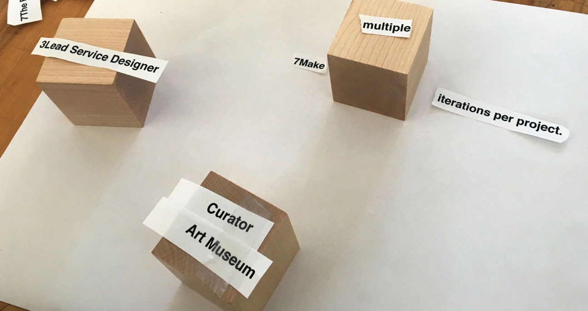

Faces of Design
Challenge
Gather and visualize data about CMU Design alumni in Pittsburgh, PA. Inspired by AIGA's 2017 Design Census.
Outcome
An interactive installation that allows visitors to discover and explore the experiences and career paths of 33 design professionals.
Role & Contributions
- Survey design
- Data analysis
- Data visualization
- Installation design
Teammates
- Tiffany Jiang
- Anqi Wan
- Raphaël Weikart
- Sharon Yu
Overview
Survey Questions
My team wrote a survey asking CMU School of Design alumni about their school and summer experiences that influenced their career choice. We selected 5 questions from our survey that we felt best showed the journey from student to professional designer:
- Which classes or skills learned at CMU have been particularly valuable to your current work?
- How has your experience in college influenced your career choice?
- What's the best piece of advice you received from a Design faculty member while at CMU?
- What were deciding factors in choosing your current (or last) job?
- What was your most formative summer experience as a student (job, research, travel)?
Installation & Cube Design
In the installation, each cube represents one designer who answered our survey. We used 5 of the cube's faces to represent our survey questions, and the last face to display the designer's current job title and workplace.
Visitors would place a cube in the "active" spot, displaying the designer's answer for the question on the face-down side. Then, the interface would highlight other cubes with similar stories. We felt that the most meaningful way to explore our survey responses was to help viewers discover the common threads that people have through school and design.

Visualizing Data
Initial Concept
The responses we received were anecdotal and compelling. In order to keep the integrity of the content, we wanted our design to allow for deeper understanding of the individuals while displaying their interconnectedness as CMU alumni. We brainstormed ways to highlight the connections between the diverse stories.


Exploring 3D Form
The team explored 2D screen-based interfaces for a while, but then we got the idea to use 3D objects to increase interactivity. Cubes were an interesting form to consider because of their reminiscence to building blocks, bringing connotations of play and exploration.
To test out our ideas, we used a combination of digital and physical mock ups.
Visual Language
We worked to create a visual skin for our cubes that would communicate the meaning of the faces. Exploring a range of abstract and literal representations, we looked for ways to visually represent the questions we posed.
Below are some of my individual explorations:


The final cube design (above) uses simple shapes that suggest letters, paired with a word representing the question on each side. We found the meaning of the faces to be most accessible to people this way. We later used motion to help clarify the intended interaction as well.
Prototype Process
Intro Video
We imagined the piece existing in a space where visitors (students at CMU, perhaps) can walk up and interact freely. To explain how to interact with it, we included an introductory video that would start playing when someone walked up. The team worked on the video script together, and I animated several parts of it. The intro is shown in our final project video above.
Proof of Concept
As a proof of concept, the team set up a mock installation. We projected the digital interface and spoofed responsive interactions to convey the feeling of exploring our census data.


Learning Outcomes
- Exploring collected data and identified points of interest by layering it together
- Designing for the experience of discovery
- Balancing readability and clarity of information in a large and physical interactive display, especially when using motion
- Storytelling for a clear proof of design concept
Reflection
Although explorative and abstract, I see this project as possibly a proof of concept for an interactive experience that could enhance data-driven stories. For example, I could see exploring an adaptation of this project for a social media or networking platform like LinkedIn.